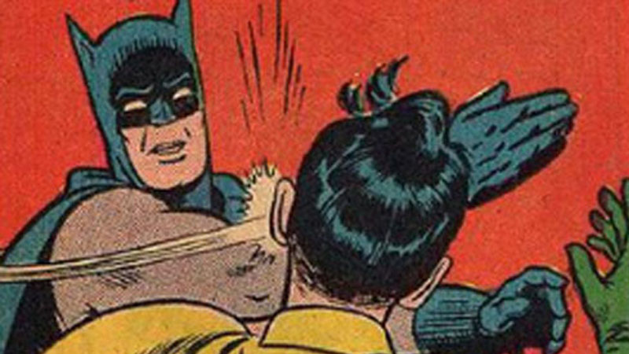

Carmen Twillie and Lebo M - The Circle of Life
Office hours are cancelled for voice preservation
I need to know about any final exam date conflicts today!
Any final exam questions?
Will is not going to be teaching LING 3100
(I’ll let you know who’s actually teaching it ASAP!)
Why do languages die?
How do we save them?
Different people define it differently
Last speaker dies?
Second-to-last?
Only one fluent speaker?
… but it definitely happens
According to The Endangered Languages project, around 46% of languages are currently “endangered”
“9.2% of the living languages have fewer than 10 speakers and are very likely to die out soon, if no revitalization efforts are made.”
“639 of the languages known to have existed are already extinct – 10% of all languages.”
“Since 1960 we have lost as many as 28 entire language families.”
“Language death progresses at the rate of about one language in three months”
First, let’s knock out some myths…


Of course they can.
English couldn’t express “unfriend” 10 years ago, but we found a way
However: “Speakers don’t use this language to express modern concepts” happens
Some groups are no longer able or willing to
Some groups just don’t want outsiders to preserve their language
Some people would really rather just join the larger group

We shouldn’t have a “linguistic savior” complex
Groups have a right to do with their languages what they please
Remember, “all languages must be preserved” is a cultural value
Sudden or Biological Language Death
Top-down language death
Bottom-up language death
When a language dies because all speakers are killed or isolated
All the speakers are wiped out by a disease/flood/plane crash
All speakers are killed in a Genocide
All speakers are abruptly separated
When a language dies due to purposeful efforts by an external group, usually a government or occupying force
“All speakers of ______ are enemy combatants/spies/communists”
“Speaking _______ is illegal”
“Kidnap indigenous children, given them new names, then raise them in English-only boarding schools!”
“It’s against the law to provide translation into _______ in courtrooms, hospitals, etc”
“Children are to be taught in _____ only”
“You can’t teach math in your savage language!”
When a language dies because the speakers stop using it, or stop teaching it to their children
Minority languages in mostly-monolingual cultures face massive pressures
“We’re surrounded by speakers of English, why would I want to teach my kids Arapaho?”
“All business with outsiders is done in English, and they’ve got all the money…”
“We don’t have materials to run schools in our language”
“We can’t write in our language, it’s not worth making a new system”
“Why speak ____ at home when everybody else is speaking English?”
“Supportive” or not, society wants assimilation
Minority populations often have enough disadvantage as it is
Teenagers aren’t exactly forward-thinking
Survival always come first
“Well, the gov’t kidnapped all the kids, and now we don’t have any time to teach their kids…”
“After the genocide, the government separated speakers”
“We were too busy rebuilding after the flood to keep teaching kids…”
A mudslide hits, killing or scattering all 80 remaining speakers of a language. This is…
Sudden language death
Top-down language death
Bottom-up language death
A mudslide hits, killing or scattering all 80 remaining speakers of a language. This is…
Top-down language death
Bottom-up language death
| A group is isolated within a larger culture which is strongly anti-indigenous, so speakers stop using the language to ‘blend in’. This is… |
| A) Sudden language death |
| B) Top-down language death |
| C) Bottom-up language death |
A group is isolated within a larger culture which is strongly anti-indigenous, so speakers stop using the language to ‘blend in’. This is…
Sudden language death
Top-down language death
| So, languages die. |
| ### How can speakers and linguists help turn the tide? |
An attempt to increase the number speakers and frequency of use of an endangered language
Increase the language’s prestige within the dominant community
Increase their wealth
Increase their legitimate power in the eyes of the dominant community
Have a strong presence in the education system
Can write down the language
Can use electronic technology
Hinton gives eight steps, but there are other ways!
Here’s a pretty generic outline
Are there any speakers left?
What resources does the community have?
How do people feel about the language?
What’s the goal?
If there are still speakers, document everything ASAP!
If the language is dead, resurrect it using past work
Build vocabulary for any gaps
Adults need to learn to be able to teach children
Mentorship programs work well
They help identify gaps, and help build early materials
Adults can start using the language at home
Resurrect old cultural practices which use the language
Create new cultural practices
Give people a place where speaking the language is expected and desired
Create second-language materials (“Hey English speaking kids, learn _____!”)
Age-appropriate grammar materials, developed from the grammar in Step 2
Create first-language materials (“Let’s learn math, using ______!”)
There are immersion schools for Maori and Hawaiian
At this point, kids will learn the language
This is really expensive and difficult
Young children will grow up speaking it
Adults will grow more proficient (by force!)
… but everybody needs support
Put the language in places where the apathetic will hear it
Local meetings and government
Shops and commerce
TV, Radio, Facebook, Internet
Show other communities your language
Encourage adoption by outsiders
Encourage a broader presence online
Uniting disparate groups of speakers on the internet
WoW guilds in Hawaiian
This may not be a goal for all communities
Figure out the goals and resources
Document what’s left of the language and fill in blanks
Teach adults
Bring the language back to the culture
Teach kids to speak the language
Put the language back into the home
Put the language back into the community
Expand from there!
Sounds easy, right?

Requires a lot of community desire
Requires a lot of community effort
Requires the language to be documented in the first place
Cost!
Most importantly…
Revitalization can’t succeed if people still don’t want to use the language
“We have a grammar” is not success, just a first step
If children are learning the language, you’re doing well
If children are using the language, you’re doing great!
If children are teaching their parents, you’re doing awesomely!
… but the very best sign?
“I’ve heard that teenagers are now using Lakota to talk behind their parents’ backs”

Yurok had six speakers
Used a Master/Apprentice program, and Elementary/High School programs
In 2013, “300 basic Yurok speakers, 60 with intermediate skills, 37 who are advanced and 17 who are considered conversationally fluent.”
Outright extinct for 100+ years
A member of the tribe (and MIT-trained Linguist) created a grammar from old texts
They now have 400 basic speakers, and will open a charter school soon
Some children are being raised speaking Wampanoag in the home

Maori faced strong threat from English in New Zealand
Was in the process of bottom-up death (even with 60k speakers)
Maori people went at things legislatively
One of three Official Languages of NZ
“[Maori is] appearing on building names, administrations, businesses and other signage along side English
In fact the language’s presence is so strong that Maori interpreters are readily available at all parliamentary sessions or other high level government affair should a speaker choose to use Maori.
Died as a spoken language in 1st to 4th Centuries CE
Survived only as a liturgical language in Judaism
Resurrected (rebuilt, reconstructed) in the 19th Century
Now has around 7 million speakers
Languages die for a number of reasons
Language Revitalization is complex
… and really hard
But it can work!